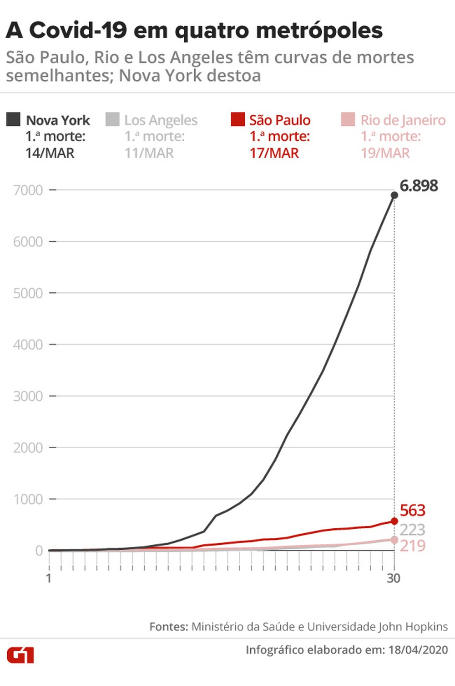

COVID-19 - Notícias
Primeira morte de Covid-19 no RJ completa um mês; compare como a doença matou em outras três localidades
Desde 17 de março, 276 pessoas morreram em decorrência do novo coronavírus no estado. Curvas brasileiras se assemelham à de Los Angeles, nos Estados Unidos, mas estão abaixo da de Nova York, onde a epidemia explodiu e já matou 11 mil pessoas.
Há um mês, o governo estadual anunciou a primeira morte por Covid-19 no Estado do RJ. Foi também quando ocorreu a primeira morte na capital. Em 30 dias, 219 pessoas morreram por causa do novo coronavírus na cidade do Rio, segundo o Painel Rio Covid-19, da Prefeitura. Em São Paulo, que anunciou a primeira morte em 17 de março, foram 563 mortos pela doença no mesmo número de dias, de acordo com a Secretaria Municipal de Saúde. Apesar da diferença de 344 mortes entre as duas metrópoles, especialistas afirmam que a evolução da doença é bem parecida em ambas. “As curvas são bastante semelhantes — embora em escalas diferentes”, afirmou Carlos Magno Fortaleza, epidemiologista da Universidade Estadual de São Paulo (Unesp), em Botucatu."
“É um crescimento ligeiramente desacelerado por conta das medidas de isolamento”, destacou.
“Esses dois municípios estão segurando a disseminação da Covid-19 para o resto do país. O que é feito ali em termos de isolamento social reflete em outras regiões”, explicou. Fortaleza lembrou que “não à toa” São Paulo e Rio de Janeiro são as cidades com o maior número de casos. “São as que recebem mais voos internacionais, da Europa especificamente”, detalhou.
As curvas de mortes carioca e paulistana também são similares à de Los Angeles, na Califórnia, na Costa Oeste dos Estados Unidos. Lá, nos 30 dias após o primeiro óbito, em 11 de março, o coronavírus matou 223 pessoas. “A explosão de casos em Nova York tem uma razão bastante clara: é um local com uma grande densidade demográfica e que não realizou a tempo as medidas de isolamento social”, explicou o epidemiologista. “Nós podemos traçar um paralelo. O Trump, nas primeiras semanas, teve um discurso negacionista — que nós vemos aqui no Brasil”, emendou Fortaleza. “O Brasil teve mais tempo para se preparar, realizou um isolamento social não ideal, mas razoável, nas grandes metrópoles e nos primeiros dias da pandemia. No entanto, esse isolamento começa a relaxar, e com esse relaxamento nós podemos sim ter um aumento explosivo de mortes e chegar a uma situação semelhante à dos Estados Unidos”, alertou.

Nova York tem características diferentes de Los Angeles. A densidade é menor na Califórnia, onde o carro se sobrepõe ao transporte público, mas as autoridades tardaram a agir. Vítor Sudbrack, físico da Unesp e integrante do Observatório Covid-19 BR, que reúne especialistas de outras seis universidades, atenta para o fato de que Los Angeles registrou a primeira morte em 11 de março, três dias antes de Nova York, mas tem contido a doença. “De populações mais jovens e condições de hospitalização melhores, se espera um tempo de duplicação maior”, diz Sudbrack. Tempo de duplicação é uma das formas de medir a velocidade de uma pandemia. O observatório estima que o número de mortos pela Covid-19 dobre nos EUA e no Brasil a cada seis dias — no início da crise, os óbitos duplicavam a cada dois dias.
Covid-19: Bolsonaro torce para que país nunca saiba número exato de mortos
Não sabemos a quantidade de mortos produzida pelo coronavírus em território nacional e talvez nem venhamos a saber - para alívio do presidente da República. Os 2.347 óbitos registrados até este sábado (18) são apenas um retrato atrasado e imperfeito da situação em que estamos. Se há uma fila de vítimas fatais cujas amostras esperam para serem analisadas, outras tantas nunca vão ostentar em seus atestados a causa real de suas mortes porque não houve coleta pela escassez de testes.
Pesquisadores do Observatório Covid-19 apontaram ao UOL que, na última quarta (15), quando o país registrava oficialmente 1.736 mortes, o número real estaria entre 3.800 (em uma projeção conservadora) e 15.600 (em uma mais pessimista). E o governo de Pernambuco, só para citar um exemplo fora do eixo Rio-São Paulo, ao montar uma força-tarefa para coletar sangue das pessoas mortas por problemas respiratórios, fez a letalidade dar um salto.
A situação, que traz angústia para famílias (que nunca saberão o motivo do falecimento) e desespero a gestores públicos e profissionais de saúde (que estão trabalhando às escuras para tratar pacientes e planejar o enfrentamento da crise), é um alento para Jair Bolsonaro. Pois a narrativa que tenta vender é que o grande inimigo do país não é uma pandemia assassina transmitida por contato social, mas as ações de governadores e prefeitos para reduzir a velocidade de contágio e, portanto, evitar o colapso do sistema de saúde.
Como haverá mais empregos perdidos e negócios fechados do que pessoas mortas, ele aposta na minimização da questão
sanitária a fim de garantir que não comecem a lhe servir café frio antes de outubro de 2022.
Claro que seu governo apresentou com atraso e de forma insuficiente medidas para garantir alimento aos trabalhadores informais,
reposição e complemento salarial aos formais e apoio a micro e pequenas empresas, mas ele convenientemente se esquece disso.
Culpa apenas quarentena e não sua própria lentidão.
As hordas que realizam carreatas com buzinaços em frente a hospitais e travam a passagem de ambulâncias, pedindo o retorno à normalidade por decreto (como se o vírus respeitasse o Diário Oficial), provavelmente só se importam com mortos se eles têm seu sobrenome. Mas a maioria racional da população consegue ponderar dados concretos na balança da vida. Se tivéssemos números de óbitos reais, dificilmente o apoio à quarentena estaria caindo (em duas semanas, foi de 76% para 68%, de acordo com o Datafolha). Por mais duro que seja o impacto econômico deste momento, é difícil ignorar o problema quando ele deixa o anonimato e ganha rosto conhecido - o instituto de sobrevivência é algo po.
Mortes por Covid-19 nos EUA passam de 40 mil
Casos confirmados da doença causada pelo novo coronavírus passam de 740 mil, segundo levantamento da Universidade Johns Hopkins.
O número de mortos por Covid-19 nos Estados Unidos ultrapassou a marca de 40 mil neste domingo (19), segundo levantamento da Universidade Johns Hopkins. Ainda de acordo com o monitoramento da instituição, o país registra mais de 740 mil casos confirmados do novo coronavírus.
Os Estados Unidos são o país mais atingidos pela pandemia. Somente na cidade de Nova York, onde o uso de máscaras passou a ser obrigatório, o número de mortos pela Covid-19 chegou a 14 mil.
Esses números mostram a velocidade do espalhamento da pandemia. Os registros de mortes pularam de 30 mil para 40 mil nos Estados Unidos em apenas três dias. Apesar dos números ainda altos e da continuidade das medidas de contenção, o governador nova-iorquino, Andrew Cuomo, admitiu que "o pior já passou" (veja no VÍDEO abaixo).
No sábado, o presidente Donald Trump também afirmou ver "sinais" de que o pico dos contágios do novo coronavírus já passou nos EUA. O republicano pediu que governadores reabrissem o comércio em alguns estados — recentemente, a Casa Branca anunciou uma série de passos para a reabertura.
São Paulo ultrapassa mil mortes causadas pela Covid-19
Foram 24 novas mortes e 373 novos casos confirmados da doença nas últimas 24 horas, segundo a Secretaria Estadual de Saúde.
O estado de São Paulo ultrapassou mil mortes causadas pela Covid-19, segundo informações da Secretaria Estadual de Saúde. Foram 24 novos óbitos registrados neste domingo (19) e o número passou para 1.015 mortes no estado e 14.267 casos confirmados. O novo número de casos representa um aumento de 2,68% em relação aos 13.894 casos anunciados no sábado (18). No caso das mortes, o crescimento foi de 2,42% em relação aos 991 óbitos do dia anterior. O estado passou o número de mil mortes após 32 dias da primeira confirmação de morte pelo novo coronavírus no país.
Entretanto, apesar do alto crescimento de casos e mortes, o estado de São Paulo possui 7 mil testes de coronavírus que aguardam confirmação no estado de São Paulo. Em São Paulo, já são 228 cidades com pelo menos um caso e 93 municípios com no mínimo uma morte. A capital paulista concentra o maior número de mortes até este domingo. Entre as vítimas que morreram, 599 eram homens e 416 eram mulheres. Os óbitos continuam concentrados em pacientes com 60 anos ou mais, totalizando 78,7% das mortes. De acordo com a Secretaria de Saúde, 5,6 mil pessoas estão internadas em hospitais de São Paulo com quadro suspeito ou confirmado de coronavírus. Desses pacientes internados, 3.279 estão em leitos de enfermaria e outros 2.345 em leitos de UTI do estado. De acordo com a Secretaria Municipal de Saúde, até o dia 17 abril apenas a capital registrou 743 mortes confirmadas por Covid-19. Porém, outras 1.192 mortes eram consideradas suspeitas da doença, ou seja, no total são quase 1.935 óbitos, sendo que 62% ainda não tem confirmação.
Aumentam as teorias da conspiração que ligam Bill Gates à covid-19
Teorias publicadas nas redes sociais ganham relevante volume de interações. Só no Facebook foram 900.000

O fundador da Microsoft Bill Gates, uma das pessoas mais ricas do planeta, é um grande alvo de teorias da conspiração sobre o surgimento da pandemia do novo coronavírus, causador da covid-19. A empresa de análise de mídia Zignal Labs verificou que as postagens nas redes sociais afirmavam falsamente que o fundador da Microsoft projetou a curva crescente de contaminação do vírus desde o início deste ano, informou o jornal The New York Times. No total, a Zignal Labs calcula que as teorias da conspiração envolvendo Gates e o vírus foram mencionadas 1,2 milhão de vezes nas redes sociais e nas transmissões de TV. Foram mais de 16 mil postagens no Facebook sobre Gates e o vírus, contabilizando cerca de 900 mil curtidas e comentários. A empresa informou que os dez vídeos mais populares do YouTube em março e abril, divulgando informações erradas sobre Gates, atraíram 5 milhões de visualizações.
A relação de Bill Gates com as teorias surgiu por conta de uma palestra, de 2015, na qual ele afirmava que o grande risco para a humanidade não era uma guerra nuclear, mas um vírus que pudesse infectar e ameaçar a vida de milhões de pessoas. A hipótese difundida é que ele sabia sobre a pandemia antecipadamente, citando uma patente de vacina registrada por um grupo britânico chamado Pirbright Institute que recebeu financiamento da Fundação Gates, iniciativa filantrópica do bilionário e da sua esposa para a área de saúde. A teoria foi levantada dois dias depois pela Infowars, conhecido como um disseminador de desinformação. No entanto, a vacina não estava relacionada ao novo coronavírus, mas a um coronavírus diferente que afeta as aves.
Coreia do Norte afirma não ter casos de coronavírus e levanta dúvidas
No início do surto de coronavírus, a Coreia do Norte se isolou ainda mais ao fechar as fronteiras com a China e adotar medidas rígidas de confinamento
O regime da Coreia do Norte voltou a afirmar no domingo, 12, que não há nenhum caso confirmado da covid-19, doença causada pelo novo coronavírus, no país. A Organização Mundial da Saúde (OMS) confirmou que, pelos dados que tinha, não havia casos confirmados da doença na Coreia do Norte. Segundo a OMS, centenas de pessoas testaram positivo para o novo coronavírus. Porém, já não há mais vestígios da covid-19 no país comandado por Kim Jong-un. A pandemia já atingiu 180 países. O mundo tem mais de 1,8 milhão de casos confirmados e 113 mil mortes, segundo dados da Universidade Johns Hopkins.
Em janeiro, logo após o vírus ser detectado, o país se isolou ainda mais do mundo ao anunciar que estava fechando as fronteiras com a China e adotando medidas rígidas de confinamento aos seus cidadãos. “Adotamos medidas preventivas e científicas como inspeções e quarentenas para todas as pessoas que chegavam ao país, desinfetamos os produtos, fechamos as fronteiras e bloqueamos todas as rotas marítimas e aéreas”, afirmou Pak Myong Su, diretor do departamento de epidemias da Coreia do Norte. Por ser um regime autoritário sem a garantia da liberdade de expressão e de imprensa, é difícil saber o que ocorre dentro do país. O comandante militar norte-americano na Coreia do Sul, general Robert Abrams, declarou no mês passado que tinha “praticamente certeza” de que a Coreia do Norte registrava casos do vírus, apesar das negativas de Pyongyang. Especialistas também questionam as informações divulgadas pelo regime. Na vizinha do Sul, o vírus atingiu 9.976 pessoas e matou 169 delas, apesar dos esforços do governo em combater a epidemia e testar em massa a população. Enquanto a doença ainda se alastrava dentro da China, em fevereiro, o ministério das Relações Exteriores da Rússia anunciou que enviou à Coreia do Norte cerca de 1.500 kits de diagnóstico, após um pedido de Pyongyang dado “o risco existente da covid-19”. Já a Organização Mundial da Saúde pretende destinar US$ 900 mil ao país para ajudar na resposta ao vírus. Especialistas afirmaram temer que uma epidemia da covid-19 no país possa causar grandes danos à população, que vive em situação de extrema pobreza. O próprio ditador Kim Jong-un advertiu no mês passado para “graves consequências” se o vírus entrasse no país. (Com agências internacionais).
Sobre a autora deste site
Possui graduação em Engenharia de Computação e mestrado em Engenharia Elétrica e de Computação, adora programar e atualmente têm focado seus estudos e projetos nas áreas de Data Science e Machine Learning. Têm como interesses pessoais música, jogos e matemática. Você pode encontrar um pouco dos projetos já realizados pela autora em seu Github e acompanhar um pouco do seu perfil profissional no Linkedin
Informações para contato
Entre em contato conosco, preencha o formulário abaixo e envie sua mensagem.
Saiba mais sobre estas noticias
Encontre mais informações a respeito das noticias exibidas neste site nos respecivos endereços
- Primeira morte de Covid-19 no RJ completa um mês; compare como a doença matou em outras três localidades
- Covid-19: Bolsonaro torce para que país nunca saiba número exato de mortos
- Mortes por Covid-19 nos EUA passam de 40 mil
- São Paulo ultrapassa mil mortes causadas pela Covid-19
- Aumentam as teorias da conspiração que ligam Bill Gates à covid-19
- Coreia do Norte afirma não ter casos de coronavírus e levanta dúvidas